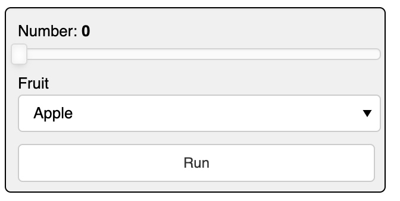
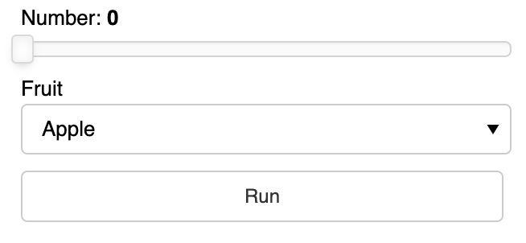
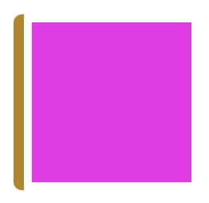
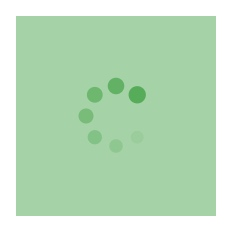
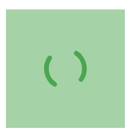
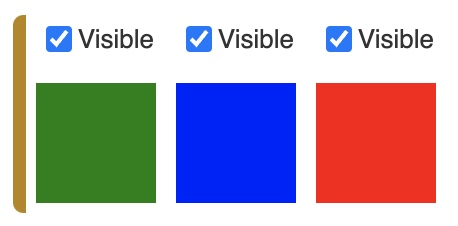

https://panel.holoviz.org/user_guide/Customization.html
In addition to parameters specific to each component and class of components, all components define a shared set of parameters to control the size and style of the rendered views.
Styling Components
css_classes
CSS styles can be embedded in raw form or by referencing an external .css file by providing each to the panel extension using the raw_css and css_files arguments; both should be supplied as lists.
# define a CSS class called panel-widget-box
css = '''
.bk.panel-widget-box {
background: #f0f0f0;
border-radius: 5px;
border: 1px black solid;
}
'''
pn.extension(raw_css=[css])
# create a Column with the widget-box CSS class
pn.Column(
pn.widgets.FloatSlider(name='Number', margin=(10, 5, 5, 10)),
pn.widgets.Select(name='Fruit', options=['Apple', 'Orange', 'Pear'], margin=(0, 5, 5, 10)),
pn.widgets.Button(name='Run', margin=(5, 10, 10, 10)),
css_classes=['panel-widget-box'])
with a .css file

no .css file

Background
pn.pane.HTML(background='#f307eb', width=100, height=100)

Loading
All components also have a loading parameter which indicates that they are currently processing some event.
# pn.config.loading_spinner: The style of the global loading indicator, e.g. ‘arcs’, ‘bars’, ‘dots’, ‘petals’.
# pn.config.loading_color: The color of the global loading indicator as a hex color, e.g. #6a6a6a
# config before loading
pn.extension(loading_spinner='dots', loading_color='#00aa41')
pn.pane.HTML(background='#00aa41', width=100, height=100, loading=True)


Style
Certain components, specifically markup-related panes, expose a style parameter that allows defining CSS styles applying to the HTML container of the pane’s contents, e.g. the Markdown pane:
pn.pane.Markdown('### A serif Markdown heading', style={'font-family': "serif"})
Visible
a = pn.pane.HTML(width=60, height=60, background='green')
b = pn.pane.HTML(width=60, height=60, background='blue', visible=False)
c = pn.pane.HTML(width=60, height=60, background='red')
layout = pn.Row(a, b, c)
controls = pn.Row(*(c.controls(['visible'])[1] for c in layout))
for c in controls:
c.width = 50
pn.Column(controls, layout)

Component Size and Layout
Margin
The margin parameter can be used to create space around an element defined as the number of pixels at the (top, right, bottom, and left).
The margin can be defined in one of three ways:
margin=25
top, bottom, left, and right margins are 25px
margin=(25, 50)
top and bottom margins are 25px
right and left margins are 50px
margin=(25, 50, 75, 100)
top margin is 25px
right margin is 50px
bottom margin is 75px
left margin is 100px
pn.Row(
pn.Column(pn.widgets.Button(name='Run', margin=25), background='#f0f0f0'),
pn.Column(pn.widgets.Button(name='Run', margin=(25, 50)), background='#f0f0f0'),
pn.Column(pn.widgets.Button(name='Run', margin=(25, 50, 75, 100)), background='#f0f0f0'))
Align
In a grid you may also have to specify the horizontal and vertical alignment separately to achieve the layout you are after:
pn.GridBox(
pn.widgets.IntSlider(name='Test'), pn.widgets.IntSlider(align='end'),
pn.widgets.TextInput(name='Test', width=150), pn.widgets.TextInput(width=150, align=('start', 'end')),
ncols=2)
Absolute sizing using width and height
pn.Row(
pn.pane.Markdown('ABCDE', background='#f0f0f0', width=200, height=200),
pn.pane.PNG('https://upload.wikimedia.org/wikipedia/commons/4/47/PNG_transparency_demonstration_1.png', width=200),
pn.widgets.FloatSlider(width=200))
Responsive sizing
sizing_mode
- “fixed”: Component is not responsive. It will retain its original width and height regardless of any subsequent browser window resize events. This is usually the default behavior and simply respects the provided width and height.
- “stretch_width”: Component will responsively resize to stretch to the available width, without maintaining any aspect ratio. The height of the component depends on the type of the component and may be fixed or fit to component’s contents.
- “stretch_height”: Component will responsively resize to stretch to the available height, without maintaining any aspect ratio. The width of the component depends on the type of the component and may be fixed or fit to component’s contents.
- “stretch_both”: Component is completely responsive, independently in width and height, and will occupy all the available horizontal and vertical space, even if this changes the aspect ratio of the component.
pn.Row(
pn.pane.Str(background='#f0f0f0', height=100, sizing_mode='stretch_width'),
width_policy='max', height=200
)
pn.Column(
pn.pane.Str(background='#f0f0f0', sizing_mode='stretch_height', width=200),
height=200
)
pn.Column(
pn.pane.Str(background='#f0f0f0', sizing_mode='stretch_both'),
height=200, width_policy='max'
)
- “scale_height”: Component will responsively resize to stretch to the available height, while maintaining the original or provided aspect ratio.
- “scale_width”: Component will responsively resize to stretch to the available width, while maintaining the original or provided aspect ratio.
- “scale_both”: Component will responsively resize to both the available width and height, while maintaining the original or provided aspect ratio.
pn.Column(
pn.pane.PNG('https://upload.wikimedia.org/wikipedia/commons/4/47/PNG_transparency_demonstration_1.png', sizing_mode='scale_both'),
height=400, width=500, background='#3f3f3f')
Spacers
pn.Row(1, pn.Spacer(width=200), 2, pn.Spacer(width=100), 3, pn.Spacer(width=50), 4, pn.Spacer(width=25), 5)
# VSpacerand HSpacer provide responsive vertical and horizontal spacing, respectively. Using these components we can space objects equidistantly in a layout and allow the empty space to shrink when the browser is resized.
pn.Row(
pn.layout.HSpacer(), '* Item 1\n* Item2', pn.layout.HSpacer(), '1. First\n2. Second', pn.layout.HSpacer()
)